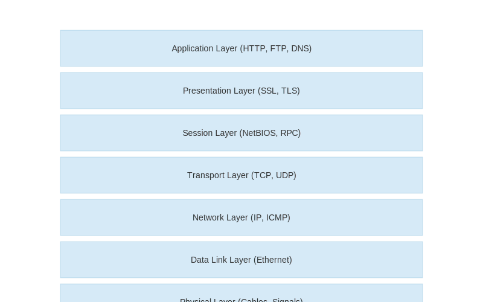

Understanding networking concepts is crucial for DevOps engineers. This includes protocols,
architecture, security, and troubleshooting network-related issues.
Network Protocol Layers

Key Concepts:
- TCP/IP: Core internet protocols
- DNS: Domain name resolution
- HTTP/HTTPS: Web protocols
- Load Balancing: Traffic distribution
- Firewalls: Network security